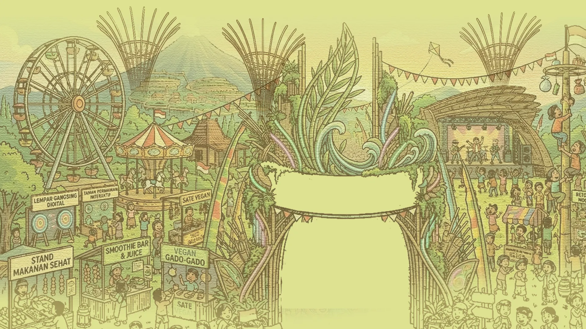
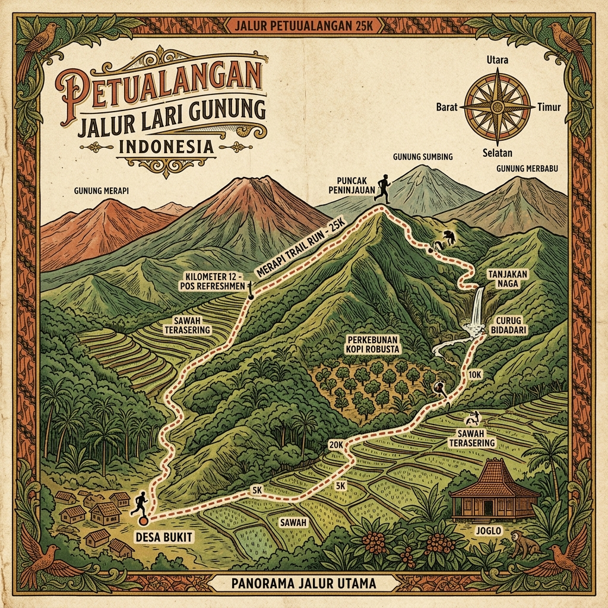

Scroll

"Nikmati harmoni rasa yang lahir dari kecintaan pada bumi"
Jelajahi pasar kuliner sehat dengan beragam pilihan makanan dan minuman yang ramah lingkungan. Dari sate vegan hingga smoothie segar, setiap sajian adalah perayaan rasa yang berkelanjutan.
Beragam pilihan menu sehat dari bahan-bahan organik lokal pilihan
Segarnya jus buah dan smoothie segar racikan langsung di tempat
Kreasi sate nabati dengan bumbu rempah Nusantara yang autentik
Klasik Indonesia dengan sentuhan modern, 100% berbasis tanaman
Temukan produk organik dari petani lokal untuk gaya hidup sehat Anda
Seduhan kopi dan teh dari biji pilihan Nusantara dengan racikan manual
"Di mana jiwa berbicara melalui gerak, suara, dan warna"
Saksikan dan rayakan kekayaan seni budaya Indonesia melalui pertunjukan tari tradisional, musik yang menyentuh hati, dan keindahan seni batik yang melintas generasi.

Gerakan anggun penuh makna yang menceritakan kisah budaya leluhur Nusantara

Harmoni suara yang menghubungkan hati, dari alunan tradisional hingga kontemporer

Warisan lintas generasi — belajar dan berkarya bersama maestro batik lokal
"Setiap langkah adalah perayaan, setiap napas adalah syukur"
Berlari bersama menyusuri keindahan alam Taman Dayu. Rute 5K yang dirancang khusus melewati pemandangan pegunungan dan hijau pepohonan — sebuah pengalaman berlari yang menyatu dengan alam.
